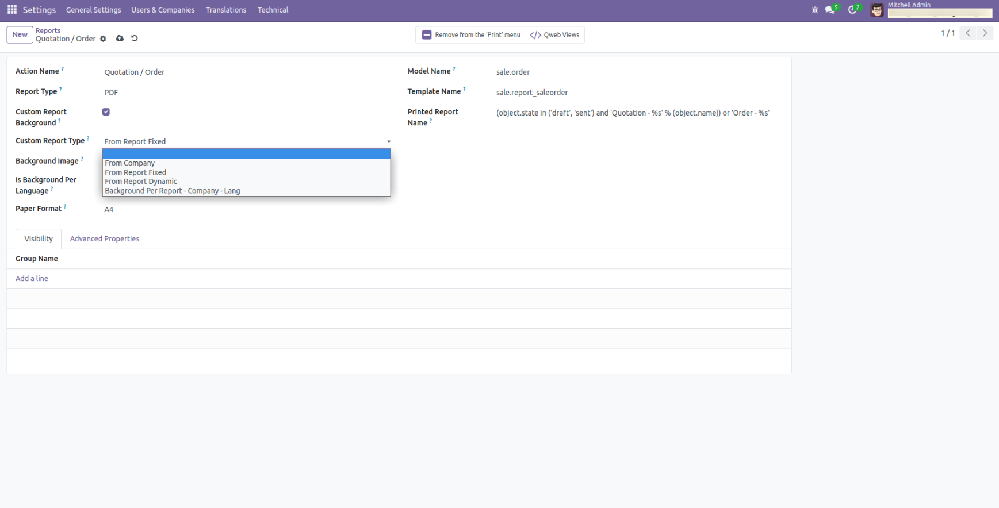
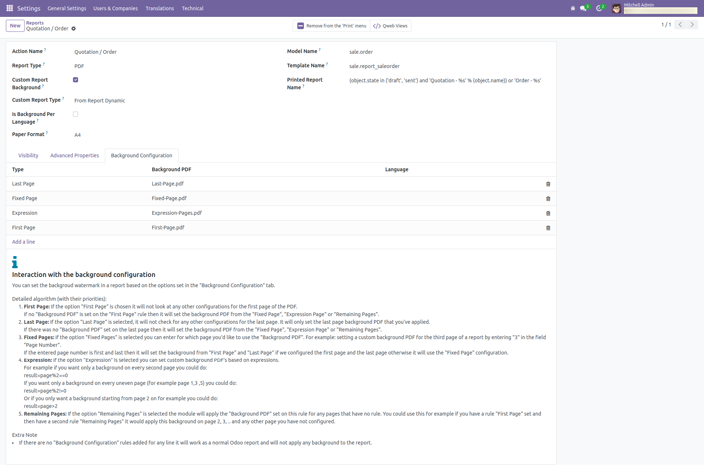
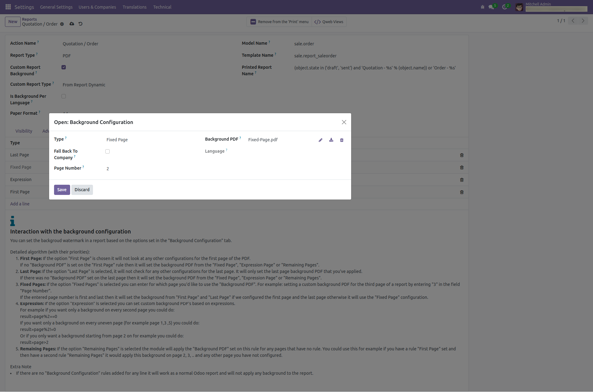

Module Custom Background facilitates is to set the Header and footer or watermark in the report based on predifined PDF configured. the predefined PDF will be used as background PDF in all the page of the report(QWeb-PDF).
At level of the report you can configure that background pdf. You can configure based on company, language, or specifically for the report only. You can configure different PDF for First and last page as well as for page range.
There are different options for configuration
Fixed background image from Company
Fixed background image from Report
Dynamic image from report
Background image from report based on language
You can select custom reprot type based on your requirements

You can also configure Dynamic Background in your PDF as per your requirements

You can configure here Dynamic Background as per your requirements

You can configure Fixed Background Based on Langauge as per your requirements